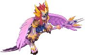

內容
官方公告
【活動1】
■概要
NPC「阿登伯羅」出現在盧亞斯鎮了。
與他對話，似乎是朋友哈比沒有精神。
重視朋友的阿登伯羅為了讓哈比打起精神，
正在尋找「哈比的魚」。
收集「哈比的魚」，獲得「哈比的禮物」吧。
■實施期間
2012年7月25日（三）維護後 ～ 9月5日（三）維護前
■活動進行方式
1.與盧亞斯鎮的NPC「阿登伯羅」(99,101)對話，
他會說希望你帶來「哈比的魚」。
2.打倒既有的怪物，有一定機率獲得「哈比的魚」。
獲得「萬聖節魔法師服裝」。
3.帶著10個「哈比的魚」與NPC「阿登伯羅」(99,101)對話，
就能獲得「哈比的禮物」。
■從哈比的禮物中出現的道具
・哈比(寵物)
・納茲的髮型[1日]
・露西的髮型[1日]
・格雷的服裝[1日]
・艾爾莎的服裝[1日]
等
■注意事項
※從NPC「阿登伯羅」(99,101)處，哈比的禮物
每個角色最多可取得100個。
※「哈比的魚」會以一定機率從遊戲內既有怪物掉落。
■履歷 已收到○次哈比的禮物。
【活動2】
■概要
活動期間，可在各職業城鎮的NPC「活動點數商店」
以活動點數「1000」兌換「哈比的禮物」。
■實施期間
2012年7月25日（三）維護後 ～ 9月5日（三）維護前
■注意事項
※活動期間，在NPC「活動點數商店」可無限次
以活動點數兌換「哈比的禮物」。
【活動3】
限期販售妖精尾巴彩券。
已在現金商店開始限期販售「妖精尾巴彩券」。
開啟「妖精尾巴彩券」可取得與「FAIRY TAIL」相關的道具。
■販售期間
2012年7月25日（三）維護後～2012年9月5日（三）維護前
【寶箱】
・妖精尾巴彩券(1個)：300Point/30日
・妖精尾巴彩券(5個)：1500Point/30日
・妖精尾巴彩券(11個)：3000Point/30日
【「妖精尾巴彩券」出現的全部道具】
・納茲的髮型(無期限)
・格雷的髮型(無期限)
・露西的髮型(無期限)
・艾爾莎的髮型(無期限)
・艾克蕾亞的髮型(無期限)
・納茲的服裝(無期限)
・格雷的服裝(無期限)
・露西的服裝(無期限)
・艾爾莎的服裝(無期限)
・艾克蕾亞的服裝(無期限)
・格雷的項鍊
・艾克蕾亞的耳環
・妖精尾巴之戒
・露西的鞭子
・艾爾莎的護手
・納茲的圍巾
・哈比的包袱
・溫蒂的緞帶
・納茲的腰帶
・艾爾莎的腰帶
・星靈之鑰
・卡娜的酒
・大吉嶺紅茶
・[稱號]滅龍魔導士
・[稱號]妖精女王
・[稱號]聖十大魔道
・[稱號]雷神眾
・[稱號]滅神魔導士
・[稱號]惡魔之心
・[稱號]六魔將軍
■注意事項
※星靈之鑰使用後，
可從星靈之鑰[7日]、 星靈之鑰[3日]、星靈之鑰[1日]當中隨機
星靈之鑰[3日]、星靈之鑰[1日]當中隨機
獲得1個。
※星靈之鑰[7日]、星靈之鑰[3日]、星靈之鑰[1日]是有使用期限的道具。
※星靈之鑰[7日]、星靈之鑰[3日]、星靈之鑰[1日]無法同時使用。
※星靈之鑰[7日]、星靈之鑰[3日]、星靈之鑰[1日]的效果是，
使用時將一般經驗值的取得率提升為1.5倍。
※收集大吉嶺紅茶後，在日後實施的追加活動時，
可以兌換溫蒂的髮型、溫蒂的服裝。
【活動4】
■期間
2012年8月23日（三）維護後～2012年9月5日（三）維護前
把「大吉嶺紅茶」也帶給NPC「格林希爾」，就能兌換只有現在才能取得的超稀有道具
「溫蒂的髮型」和「溫蒂的服裝」。
從哈比的禮物中出現的道具
從哈比的禮物中出現的道具

哈比(寵物)、納茲的髮型[1日]、露西的髮型[1日]、格雷的髮型[1日]、格雷的服裝[1日]、艾爾莎的服裝[1日]、[7日]混合藥水、[7日]速度藥水(高速)、奇蹟補藥[1]、奇蹟補藥[2]、金幣加成[3]、掉落加成[3]、經驗加成[3]、精靈的魔法棒、氣力回復藥水*10※精靈的魔法棒無法轉讓、交換、放置地板、擺攤。
從哈比的禮物中出現的稱號
從哈比的禮物中出現的稱號
冥府之門、天空巫女、煉獄七眷屬、星靈魔導士、冰之造形魔導士
※從哈比的禮物中出現的稱號無法轉讓、交換、放置地板、擺攤。
相關道具詳細
| 名稱 | 價格 | 限制 | 職業 | Wei | 取得方式 |
| 精靈的魔法棒 | 300,000 | Lv0 | 戰修盜騎聖魔預吟 | 0 | 限期活動 哈比的禮物 |
雙擊使用後，會從星座的幸運附魔中隨機選一種，施加給目前地圖上的所有角色。但已經存在的附魔無法再次施加。期限一週
星座的幸運01：道具掉落率+10%、星座的幸運02：Glod獲得率+10%、星座的幸運03：AAR+5%, SAR+5%、星座的幸運04：一般經驗值獲得量+10%、星座的幸運05：道具掉落率/Glod獲得率+13%、星座的幸運06：道具掉落率+3%/Glod獲得率+3%、星座的幸運07：STR+10、星座的幸運08：INT+10、星座的幸運09：WIS+10、星座的幸運10：CON+10、星座的幸運11：DEX+10、星座的幸運12：HP+300/SP+300/MP+300※效果依等級・INT而定（低等級約37分鐘，高等級約48分鐘，高INT則1小時以上） 無法轉讓、交換、放置地板、擺攤
留言
目前沒有留言。留言/官方活動/合作活動「劇場版 FAIRY TAIL -鳳凰的巫女-」?
- &#